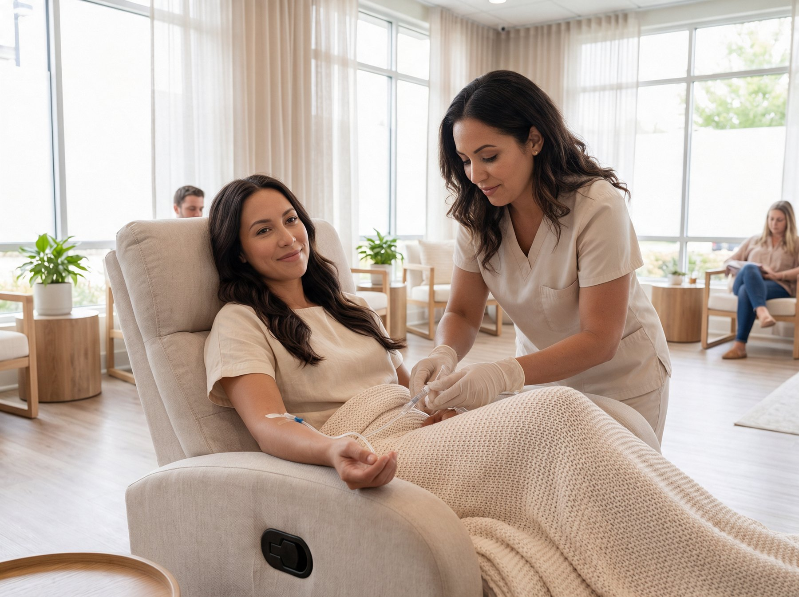
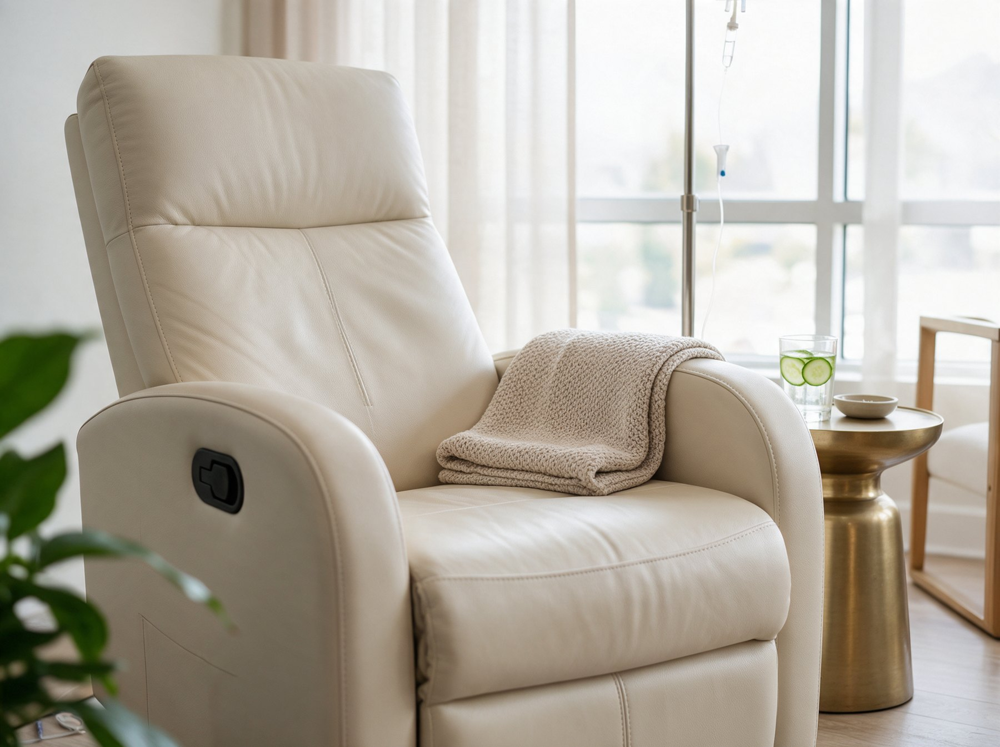

How does IV therapy actually work?
Straightforward answers about intravenous therapy, absorption, safety and what to expect. No pressure, no pitch.

What is IV therapy?
Intravenous therapy delivers fluids, vitamins and minerals directly into a vein through a small catheter. Because the nutrients enter your bloodstream, they bypass the digestive tract completely and become available to your cells right away.
You may also see this called nutrient therapy.
A nutrient infusion is another name for this delivery method.
A vitamin drip describes the contents of the bag.
An intravenous infusion describes the route into a vein.
Why does bioavailability matter?
Bioavailability is the share of a nutrient that actually reaches your bloodstream. Swallow a supplement and that share is partial, and it varies with your gut, your last meal and the dose itself. Delivered intravenously, that share is effectively complete. This is the single clearest advantage of the method.
Vitamin therapy describes nutrient delivery. Absorption alone does not establish that a wellness benefit will follow. Experiences vary.
What happens during your appointment?
You check in and talk through your goals with a provider. You settle into a heated recliner with a blanket. A licensed provider places a small catheter, usually in the forearm. The drip runs for roughly 45 minutes while you read, work or sleep. The catheter comes out, you have a glass of water, and you go.

An intravenous drip is one form of infusion therapy. At this lounge, the focus is wellness support.
Does it hurt?
You feel the catheter go in. That is a few seconds and most guests describe it as a pinch. After that you feel nothing except the blanket.
How often should you come?
Most guests settle into every two to four weeks. Athletes in a heavy training block and frequent flyers often come weekly. Your provider will suggest a rhythm based on what you are after.
Nutritional therapy is a broad phrase. Your provider can explain how the vitamin drips on this menu fit your goals.
Who should talk to a doctor first?
Talk to your physician before booking if you are pregnant or nursing, managing a kidney or heart condition, or taking medication that affects fluid balance. Bring that conversation to your appointment and your provider will work with it.
What does wellness therapy mean here?
The Drip Room is a wellness lounge. These drips support hydration, energy, immune function, recovery and skin health. They are not a treatment for illness and they do not replace care from your physician.
What does wellness support mean here?
Wellness therapy is a broad term for services focused on how you feel. The menu here focuses on nutritional and hydration support.
If you are looking for an immune boost, discuss your goals with your provider.
Read about Hydr8 IV for hydration, AthletiX Drip for athletic recovery or EnergyBoost IV.
Appointment availability
The dedicated Drip Room calendar is being prepared. Online reservations are not available on this preview.